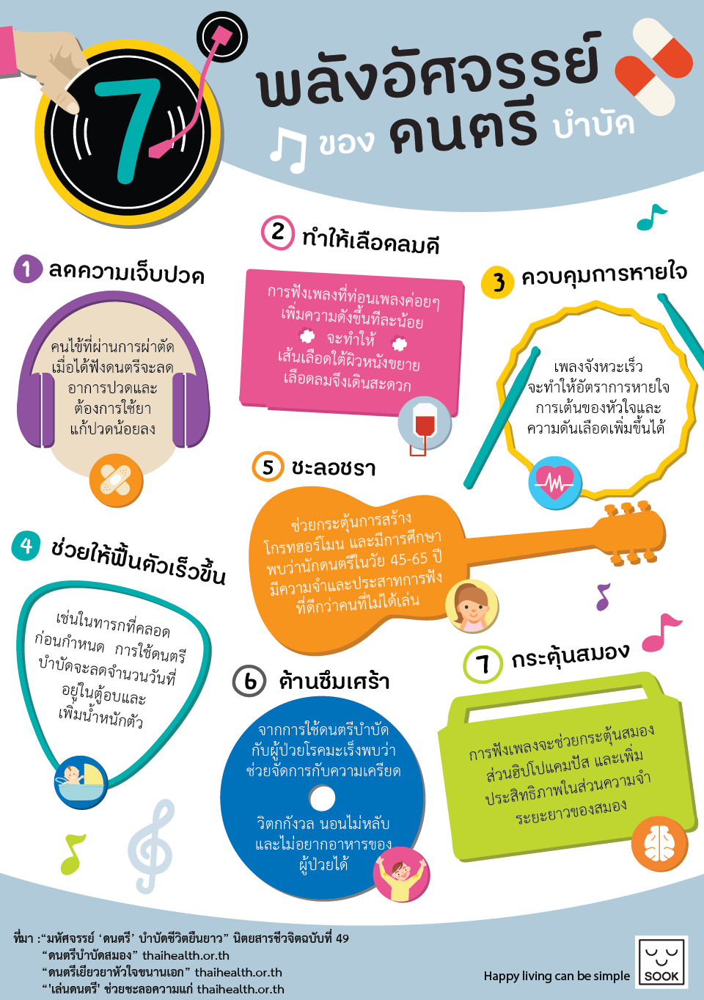

ดนตรีมีประโยชน์อย่างไร

ดนตรีช่วยผ่อนคลายความเครียด ลดความวิตกกังวล และปรับสภาวะอารมณ์ให้ดีขึ้นได้อย่างมีประสิทธิภาพ ทั้งยังช่วยปรับปรุงคุณภาพการนอนหลับให้หลับได้ง่ายและลึกยิ่งขึ้น ในด้านสติปัญญา ดนตรีมีส่วนช่วยกระตุ้นการทำงานของสมอง เพิ่มสมาธิในการเรียนและการทำงาน ส่งเสริมระบบความจำ และจุดประกายความคิดสร้างสรรค์ นอกจากนี้ในทางการแพทย์ยังถูกนำมาใช้เป็นดนตรีบำบัดเพื่อช่วยบรรเทาความเจ็บปวด กระตุ้นการเคลื่อนไหวของร่างกาย และฟื้นฟูระบบประสาท ตลอดจนช่วยสร้างความบันเทิง เพลิดเพลิน และเป็นสื่อกลางในการเชื่อมโยงความสัมพันธ์อันดีระหว่างผู้คนในสังคม